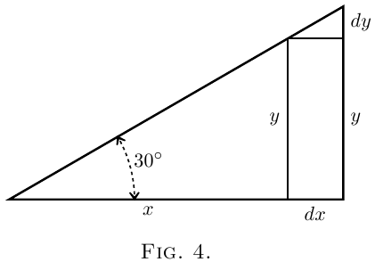
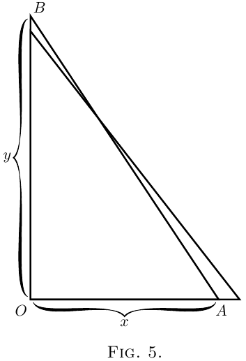

Em todo o cálculo lidamos com quantidades que estão crescendo, e com taxas de crescimento. Classificamos todas as quantidades em duas classes: constantes e variáveis. Aquelas que consideramos de valor fixo, e chamamos constantes, denotamos em geral algebricamente por letras do começo do alfabeto, tais como $a$, $b$, ou $c$; enquanto aquelas que consideramos capazes de crescer, ou (como os matemáticos dizem) de “variar,” denotamos por letras do fim do alfabeto, tais como $x$, $y$, $z$, $u$, $v$, $w$, ou às vezes $t$.
Além disso, usualmente lidamos com mais de uma variável ao mesmo tempo, e pensamos no modo em que uma variável depende da outra: por exemplo, pensamos no modo em que a altura alcançada por um projétil depende do tempo para atingir essa altura. Ou nos pedem para considerar um retângulo de área dada, e indagar como qualquer aumento no comprimento obrigará uma diminuição correspondente na largura. Ou pensamos no modo em que qualquer variação na inclinação de uma escada fará variar a altura que ela alcança.
Suponha que tenhamos duas variáveis tais que dependem uma da outra. Uma alteração em uma trará uma alteração na outra, por causa dessa dependência. Chamemos uma das variáveis de $x$, e a outra que depende dela de $y$.
Suponha que façamos $x$ variar, isto é, a alteramos ou imaginamos que seja alterada, acrescentando a ela um pedacinho que chamamos $dx$. Estamos assim fazendo $x$ tornar-se $x + dx$. Então, porque $x$ foi alterado, $y$ também se terá alterado, e se tornará $y + dy$. Aqui o pedacinho $dy$ pode em alguns casos ser positivo, em outros negativo; e não será (exceto por milagre) do mesmo tamanho que $dx$.

Tome dois exemplos.
(1) Sejam $x$ e $y$ respectivamente a base e a
altura de um triângulo retângulo (Figura 4), do qual
a inclinação do outro lado está fixada em $30°$. Se
supusermos que este triângulo se expanda e ainda assim mantenha
seus ângulos iguais aos de início, então, quando a base cresce
de modo a se tornar $x + dx$, a altura se torna $y + dy$.
Aqui, aumentar $x$ resulta em um aumento de $y$. O
triangulozinho, cuja altura é $dy$, e cuja base
é $dx$, é semelhante ao triângulo original; e
é óbvio que o valor da razão $\dfrac{dy}{dx}$ é o
mesmo que o da razão $\dfrac{y}{x}$. Como o ângulo é $30°$
ver-se-á que aqui
\[
\frac{dy}{dx} = \frac{1}{1.73}.
\]
(2) Seja $x$ representar, na Figura 5, a distância horizontal,
a partir de uma parede, da extremidade inferior de uma escada, $AB$,
de comprimento fixo; e seja $y$ a altura que ela
alcança na parede. Ora, $y$ claramente depende de $x$.
É fácil ver que, se puxarmos a extremidade inferior $A$ um
pouco mais longe da parede, a extremidade superior $B$ descerá
um pouco. Enunciemos isso em linguagem
científica. Se aumentarmos $x$ para $x + dx$, então $y$
se tornará $y - dy$; isto é, quando $x$ recebe um incremento
positivo, o incremento que resulta em $y$ é
negativo.
 Sim, mas quanto? Suponha que a escada fosse tão
longa que, quando a extremidade inferior $A$ estava a $19$ polegadas da
parede, a extremidade superior $B$ alcançava justamente $15$ pés do
chão. Agora, se você puxasse a extremidade inferior
mais $1$ polegada para fora, quanto desceria a extremidade superior?
Ponha tudo em polegadas: $x = 19$ polegadas, $y = 180$
polegadas. Ora o incremento de $x$ que chamamos $dx$,
é $1$ polegada: ou $x + dx = 20$ polegadas.
Quanto será $y$ diminuído? A nova altura
será $y - dy$. Se calculamos a altura pelo teorema de Pitágoras
(Euclides I. 47), então seremos capazes de achar quanto $dy$
será. O comprimento da escada é Assim vemos que fazer $dx$ um aumento de $1$ polegada
resultou em fazer $dy$ uma diminuição de $0.11$ polegada.
E a razão de $dy$ para $dx$ pode ser enunciada assim: É também fácil ver que (exceto em uma posição
particular) $dy$ será de tamanho diferente de $dx$.
Ora, de ponta a ponta do cálculo diferencial estamos
caçando, caçando, caçando uma coisa curiosa,
uma mera razão, a saber, a proporção que $dy$ guarda
com $dx$ quando ambos são indefinidamente
pequenos.
Deve-se notar aqui que só podemos achar
essa razão $\dfrac{dy}{dx}$ quando $y$ e $x$ estão relacionados um
ao outro de algum modo, de forma que sempre que $x$ varia $y$
também varia. Por exemplo, no primeiro exemplo
acima, se a base $x$ do triângulo for alongada,
a altura $y$ do triângulo também se torna maior,
e no segundo exemplo, se a distância $x$ do
pé da escada à parede for aumentada,
a altura $y$ alcançada pela escada diminui de
modo correspondente, lentamente no início, mas cada
vez mais depressa à medida que $x$ se torna maior. Nesses casos
a relação entre $x$ e $y$ é perfeitamente definida,
pode ser expressa matematicamente, sendo $\dfrac{y}{x} = \tan 30°$
e $x^2 + y^2 = l^2$ (onde $l$ é o comprimento da escada)
respectivamente, e $\dfrac{dy}{dx}$ tem o significado que achamos em
cada caso.
Se, enquanto $x$ for, como antes, a distância do pé
da escada à parede, $y$ for, em vez da
altura alcançada, o comprimento horizontal da parede, ou
o número de tijolos nela, ou o número de anos
desde que foi construída, qualquer mudança em $x$ naturalmente
não causaria mudança alguma em $y$; neste caso $\dfrac{dy}{dx}$ não tem
significado algum, e não é possível achar
uma expressão para ela. Sempre que usamos diferenciais
$dx$, $dy$, $dz$, etc., a existência de algum tipo de
relação entre $x$, $y$, $z$, etc., está implícita, e essa
relação é chamada uma “função” em $x$, $y$, $z$, etc.; as
duas expressões dadas acima, por exemplo, a saber
$\dfrac{y}{x} = \tan 30°$ e $x^2 + y^2 = l^2$, são funções de $x$ e $y$.
Tais expressões contêm implicitamente (isto é, contêm
sem mostrar distintamente) os meios de expressar
seja $x$ em termos de $y$ ou $y$ em termos de $x$, e por
essa razão são chamadas funções implícitas em
$x$ e $y$; podem ser respectivamente postas nas formas
\begin{align*}y &= x \tan 30° \quad\text{ou}\quad x = \frac{y}{\tan 30°} \\
\text{e}\;
y &= \sqrt{ l^2 - x^2} \quad\text{ou}\quad x = \sqrt{ l^2 - y^2}.
\end{align*}
Estas últimas expressões enunciam explicitamente (isto é, distintamente)
o valor de $x$ em termos de $y$, ou de $y$ em termos
de $x$, e por essa razão são chamadas funções
explícitas de $x$ ou $y$. Por exemplo $x^2 + 3 = 2y - 7$ é
uma função implícita em $x$ e $y$; pode ser escrita
$y = \dfrac{x^2 + 10}{2}$ (função explícita de $x$) ou $x = \sqrt{2y - 10}$
(função explícita de $y$). Vemos que uma função
explícita em $x$, $y$, $z$, etc., é simplesmente algo cujo
valor muda quando $x$, $y$, $z$, etc., estão
mudando, seja um de cada vez ou vários juntos.
Por causa disso, o valor da função explícita é
chamado a variável dependente, pois depende do
valor das outras quantidades variáveis na função;
essas outras variáveis são chamadas as variáveis
independentes porque o valor delas não é determinado a partir
do valor assumido pela função. Por exemplo,
se $u = x^2 \sin \theta$, $x$ e $\theta$ são as variáveis independentes,
e $u$ é a variável dependente.
Às vezes a relação exata entre várias
quantidades $x$, $y$, $z$ ou não é conhecida ou não é
conveniente enunciá-la; sabe-se apenas, ou é conveniente
enunciar, que há algum tipo de relação
entre essas variáveis, de modo que não se pode alterar
seja $x$ ou $y$ ou $z$ isoladamente sem afetar as outras
quantidades; a existência de uma função em $x$, $y$, $z$ é
então indicada pela notação $F(x, y, z)$ (função
implícita) ou por $x = F(y, z)$, $y = F(x, z)$ ou $z = F(x, y)$
(função explícita). Às vezes a letra $f$ ou $\phi$ é usada
em vez de $F$, de modo que $y = F(x)$, $y = f(x)$ e $y = \phi(x)$
todas significam a mesma coisa, a saber, que o valor de $y$
depende do valor de $x$ de algum modo que
não está enunciado.
Chamamos a razão $\dfrac{dy}{dx}$ de “o coeficiente diferencial de $y$
com respeito a $x$.” É um nome científico solene
para esta coisa bem simples. Mas não vamos
nos assustar com nomes solenes, quando as coisas
em si são tão fáceis. Em vez de nos assustarmos
simplesmente proferiremos uma breve maldição sobre a
estupidez de dar nomes longos e engasgantes; e, tendo
aliviado a mente, seguiremos para a coisa simples
em si, a saber a razão $\dfrac{dy}{dx}$.
Na álgebra ordinária que você aprendeu na escola,
você estava sempre caçando alguma quantidade
desconhecida que chamava de $x$ ou $y$; ou às vezes
havia duas quantidades desconhecidas a serem caçadas
simultaneamente. Agora você tem de aprender a ir
caçar de um modo novo; a raposa agora não é
$x$ nem $y$. Em vez disso você tem de caçar este
filhote curioso chamado $\dfrac{dy}{dx}$. O processo de achar o
valor de $\dfrac{dy}{dx}$ chama-se “diferenciar.” Mas, lembre-se,
o que se quer é o valor dessa razão quando tanto
$dy$ quanto $dx$ são eles mesmos indefinidamente pequenos. O
verdadeiro valor da derivada (do coeficiente diferencial) é aquele a que
ela se aproxima no caso limite quando cada um
deles é considerado infinitesimalmente miúdo.
Aprendamos agora como ir em busca de $\dfrac{dy}{dx}$.
Nunca servirá cair no erro de escolar de
pensar que $dx$ significa $d$ vezes $x$, pois $d$ não é um
fator - significa “um elemento de” ou “um pedacinho de”
o que vier a seguir. Lê-se $dx$ assim: “dê-équis.”
Caso o leitor não tenha ninguém para guiá-lo em tais
assuntos, pode-se simplesmente dizer aqui que se lê
coeficientes diferenciais do seguinte modo. O
coeficiente diferencial
$\dfrac{dy}{dx}$
lê-se “dê-ípsilon por dê-équis,” ou “dê-ípsilon sobre dê-équis.” Coeficientes diferenciais de segunda ordem serão encontrados
mais adiante. São assim: $\dfrac{d^2 y}{dx^2};$
que se lê “dê-dois-ípsilon sobre dê-équis-ao-quadrado,”
e significa que a operação de diferenciar $y$
com respeito a $x$ foi (ou tem de ser) realizada
duas vezes.
Outro modo de indicar que uma função foi
diferenciada é pondo um acento no símbolo da
função. Assim se $y=F(x)$, o que significa que $y$
é alguma função não especificada de $x$ (veja aqui), podemos
escrever $F'(x)$ em vez de $\dfrac{d\bigl(F(x)\bigr)}{dx}$. Similarmente, $F''(x)$
significará que a função original $F(x)$ foi
diferenciada duas vezes com respeito a $x$.
NOTA AO CAPÍTULO III.
Como ler diferenciais.
Assim também
$\dfrac{du}{dt}$ se lê “dê-u por dê-tê.”